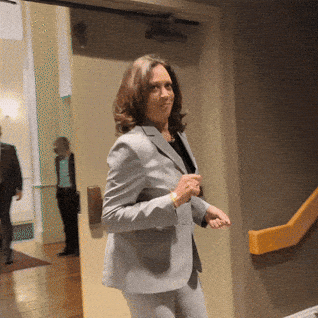

Image Format Showcase
GIF Showcase
The image I chose is an animated GIF of Kamala Harris making a "shhh" motion in a stairwell.
I decided on this image just because I think it's very funny, and I often use it as a reaction image.
This image was located at: Giphy